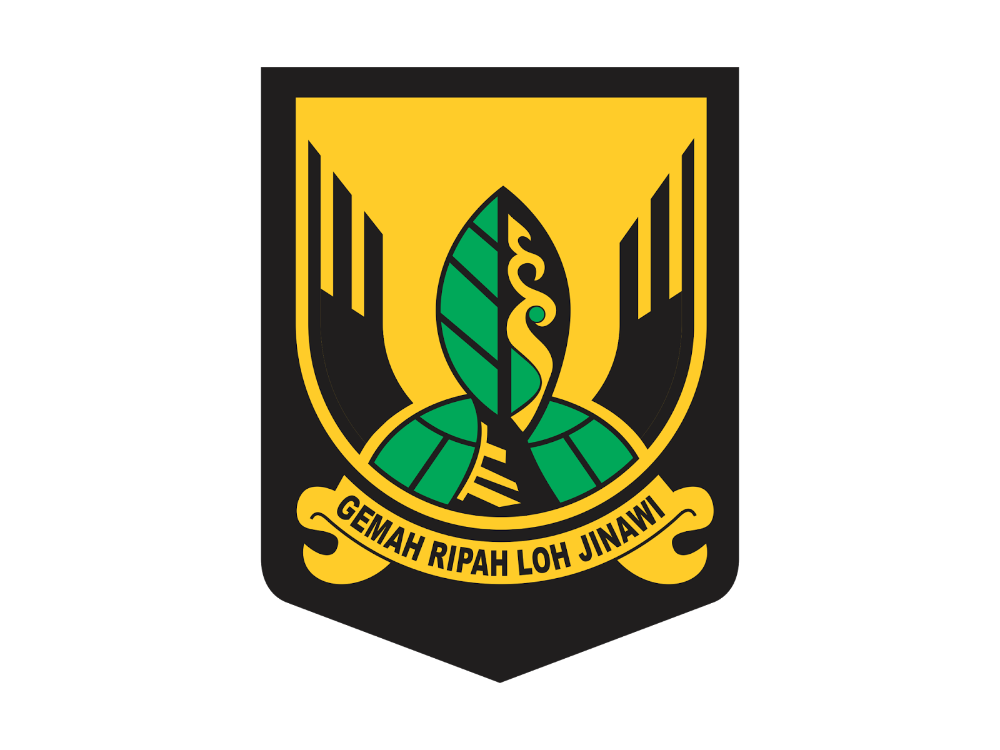

KABUPATEN SUKABUMI
Pada mulanya, Sukabumi merupakan salah satu kepatihan di Kabupaten Cianjur pada masa kolonial Hindia Belanda yang dibentuk oleh Bupati Cianjur keenam, Raden Noh Wiratanudatar VII. Semula namanya adalah Kepatihan Tjikole (Cikole) dan berganti nama menjadi Kepatihan Soekaboemi (Sukabumi) pada 13 Januari 1815. Pada masa kepemimpinannya, Sukabumi merupakan bagian dari Karesidenan Priangan Barat (West Preanger) yang merupakan hasil pemekaran dari Karesidenan Priangan pada 1923. Kepemimpinan di Kabupaten Sukabumi kemudian dilanjutkan oleh R. A. A. Soeriadanoeningrat yang memerintah sampai masa pendidikan Jepang.
Hari Jadi Kabupaten Sukabumi ditetapkan pada 1 Oktober bertepatan dengan aksi massa di Sukabumi yang membebaskan tahanan politik serta menyita persenjataan Jepang di kantor Kempetai. Selain itu, terdapat aksi lain seperti penurunan paksa bendera Jepang dan diganti bendera Indonesia di lapangan Victoria (Lapangan Merdeka Kota Sukabumi),Pada Besluit Gubernur Jenderal Dirk Fock pada 25 April 1921 Nomor 71 dijelaskan bahwa Sukabumi merupakan Afdeling (Kabupaten) yang terpisah dari Cianjur. Hal tersebut mulai berlaku sejak 1 Juni 1921. Bupati pertamanya bernama R. A. A.Soerianatabrata yang memerintah sampai dengan tahun 1930.